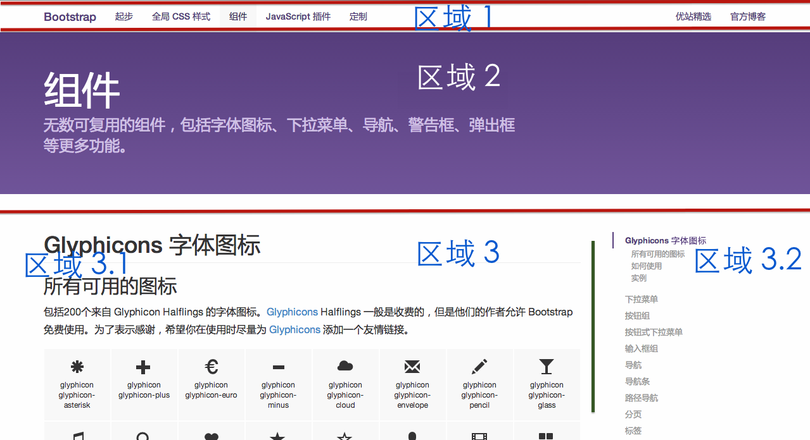

常用编辑器
- Dream Weaver
- Sublime
- vim
- EditPlus (Windows)
- UltraEdit (Windows)
- 记事本 (Windows)
Cascading Style Sheets
CSS*
*CSS 可以用来做什么？CSS 3


visualize your big thoughts
and tiny ideas
by positioning, rotating and scaling them on a page
the only limit is your imagination